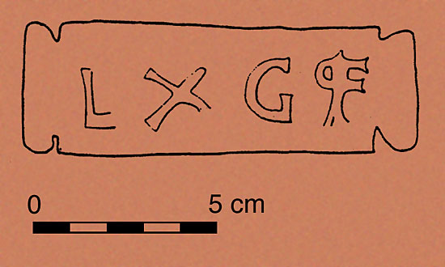

Einfache Suche
Über das Projekt
Gestempelte römische Ziegel sind eine wichtige Fundgattung zur Lokalisierung römischer Siedlungen, Gebäude und Infrastruktur, aber auch um wirtschaftliche Beziehungen zu rekonstruieren. Darüber hinaus lösen die Produktionsstempel auch Fragen zur Stationierung römischer Truppen in den Provinzen. Es ist bislang kaum möglich eine Übersicht über die immens hohe Anzahl an bisher gefundenen Ziegelstempeln zu erhalten. Daher ist unser Ziel alle publizierten Daten aus dem römischen Imperium zu sammeln, zu kartieren und einer breiten Öffentlichkeit zugänglich zu machen.
Integriert sind darin unter anderem auch alle Ziegelstempel von Vindobona (Wien) auf Basis der verdienstvollen Arbeiten von Barnabas Lőrincz sowie die Ziegel aus dem Statthalterpalast in Aquincum (Budapest), bearbeitet von Zoltán Havas (Aquincum Múzeum).
Eingearbeitete Literatur:
U. Brandl, Untersuchungen zu den Ziegelstempeln römischer Legionen in den nordwestlichen Provinzen des Imperium Romanum. Katalog der Sammlung Julius B. Fritzemeier. Passauer Universitätsschriften zur Archäologie 6 (Rahden/Westf. 1999).
J. Musil/Ch. Gugl/M. Mosser, Die Ziegelstempel der Ausgrabungen 1968 – 1977 im Legionslager Carnuntum. In: Ch. Gugl/R. Kastler (Hrsg.), Legionslager Carnuntum – Ausgrabungen 1968–1977. RLÖ 45 (Wien 2007).
J. Szilágyi, Inscriptiones tegularum Pannonicarum. Dissertationes Pannonicae 2, 1 (Budapest 1933).
J. Szilágyi, A Dáciai erödrendszer helyörségei és a katonai téglabélyegek (Die Besatzungen des Verteidigungssystems von Dazien und ihre Ziegelstempel). Dissertationes Pannonicae 2, 21 (Budapest 1946).
Redaktion
Martin Mosser
Museen der Stadt Wien – Stadtarchäologie
Obere Augartenstraße 26–28/Zi 224
A-1020 Wien
E-Mail: martin.mosser@stadtarchaeologie.at
Web: www.wien.gv.at/archaeologie

Technik
Jakob Egger
Egger Apps
Domgasse 10
A-4020 Linz
E-Mail: jakob@eggerapps.at
Web: www.eggerapps.at
Datenblatt
| ID-Nummer | 1 (Lörincz Nr. 0801) |
|---|---|
| Produzent | legio X gemina |
| Stempel (Umschrift) | LXGP°[ |
| Stempel (Eigenschaften) | - |
| Ziegelart | - |
| Fundort | |
| Wien 01 Vindobona | |
| Bezirk/Bundesland/Staat | -/Wien/Österreich(Austria) |
| Fundstelle | Parisergasse 4 |
| Fundstjahr | 1907 |
| Römische Provinz | Pannonia |
| Territorium | LEG |
| Verwahrort | |
| - | |
| Bezirk/Bundesland/Staat | -/Wien/Österreich(Austria) |
| Museum | Wien Museum Karlsplatz |
| Iventarnummer | - |
| Verwahrungsumstände | verschollen |
| Maße | |
| Länge | - |
| Breite | - |
| Dicke | - |
| Durchmesser | - |
| Literatur | Kenner 1909, 51b, Fig. 16e, 56b; ITP 45 Nr. 6 add. |
| Anmerkung | Die Frage ist, ob alle Ziegelstempel bei Kenner 1909 Fig. 16 vor Parisergasse 4 gefunden wurden? |
| Wissenschaftliche Bearbeitung | |
| Ansprechpartner |
Barnabás Lörincz Eötvös Loránd-Universität Budapest, Seminar für Alte Geschichte blorinc@ludens.elte.hu Martin Mosser MA 7 - Stadtarchäologie Wien mos@m07.magwien.gv.at |
| Interne Daten | |
| kartiert | nein |
|---|---|
| vidi | nein |
| Grabungscode | 190701 |
|  |
| Bildnachweis © MA 7 - Stadtarchäologie Wien |
| Bild-ID 12_03 |